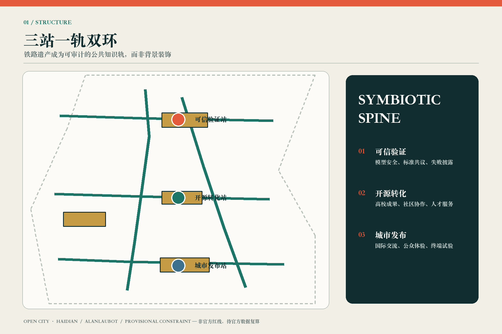
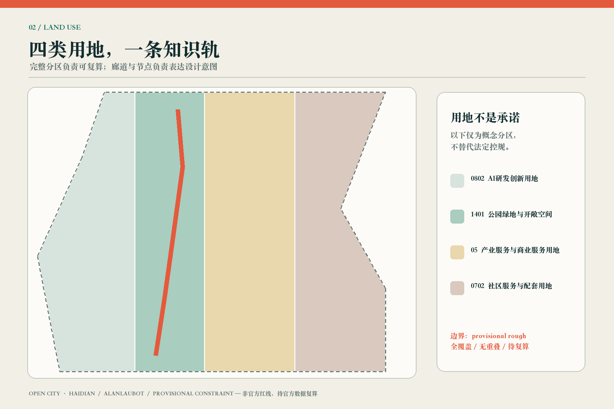
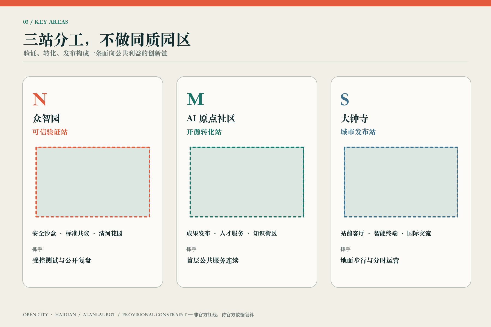
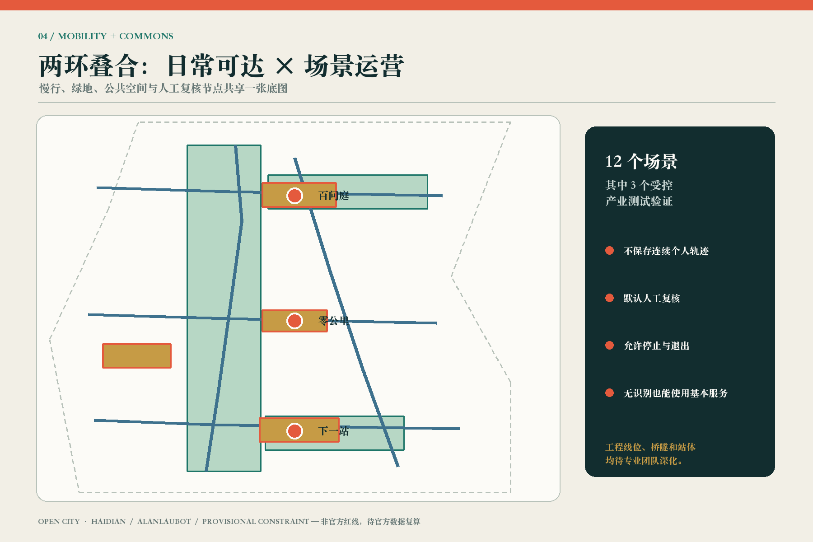
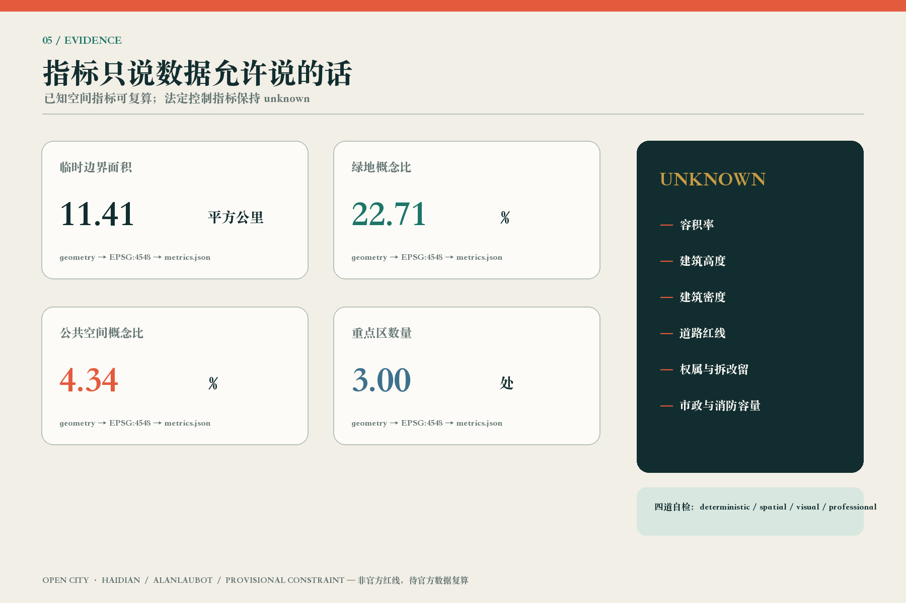

可信验证站
模型安全、标准共议、失败披露与清河花园并置，测试权限和公众观察界面分层。
从铁路遗产到开放验证城市。以三站一轨双环，把可信验证、开源转化、城市发布和日常公共生活组织成一条可追溯、可退出、可持续共创的知识轨。
重要边界：全部空间表达为概念建议；SITE_BOUNDARY 与 KEY_AREA 使用 provisional rough polygons，非官方红线，待官方数据发布后全量复算。
核心指标 / CORE METRICS


模型安全、标准共议、失败披露与清河花园并置，测试权限和公众观察界面分层。
把发布、法务、知识产权、人才服务和社区客厅组织成可穿行的知识街区。
以地面步行、遮阴停留、非机动车秩序和分时发布改善站前四象限公共体验。


六个建筑原型只说明功能与公共界面，不判断现状建筑拆改留；六项更新抓手必须等待权属、控规、道路、市政、消防和文保条件核准。
公开材料、作者确认、允许撤回
授权测试集与专业评测员复核
聚合能耗与人工停机
不保存连续个人轨迹
志愿者授权与顾问复核
异常数据由专业部门确认
法务与知识产权人工复核
预约参与、现场安全员可停止
工作人员决定转介
公开史料与文保审校
版权、事实和安全审核
聚合计数与容量复核

deterministic validation、spatial review、visual packaging check、professional evidence review 四道检查必须同时通过。provisional 警示保留，但不阻断内容评分。
来源见 sources.json；边界、控规、道路、权属、建筑、市政、文保和运营假设见 assumptions.json。所有数值以 geometry 与 metrics.json 为准。